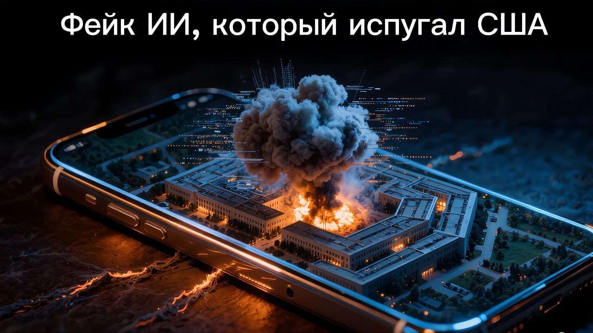

Фейк ИИ, который испугал США: взрыв у Пентагона

Май 2023 года. В соцсети Twitter (X) появился аккаунт с синей галочкой верификации, который выдавал себя за авторитетное агентство Bloomberg News. Он опубликовал «срочную новость» о взрыве возле здания Пентагона и прикрепил реалистичное фото с клубами чёрного дыма.
Больше полезного про нейросети — простым языком, каждый день в нашей группе ВКонтакте
Перейти во ВКонтакте →Провал: фейковую новость моментально подхватили другие крупные верифицированные каналы. Картинка мгновенно долетела до финансовых рынков: американский фондовый рынок всего за несколько минут просел на четверть процента, а крупные инвесторы начали паниковать, ожидая начала реального военного конфликта.
Итог: официальные лица США экстренно выступили с опровержением — никакого ЧП не было. Картинку детально разобрали эксперты и нашли явные следы генерации нейросети — характерные искажения на заборе и колоннах здания. Рынки быстро восстановились, но этот случай доказал: одна ИИ-картинка способна устроить реальный мировой экономический хаос.
Источники: Twitter Safety, Bloomberg Legal, US Department of Defense.
Ещё по теме
ИИ против человечества: проект ChaosGPT
ChatGPT выдумал человеку уголовный срок на 5 миллионов долларов
Chevrolet Tahoe за один доллар: как хитрый промт довёл до сделки